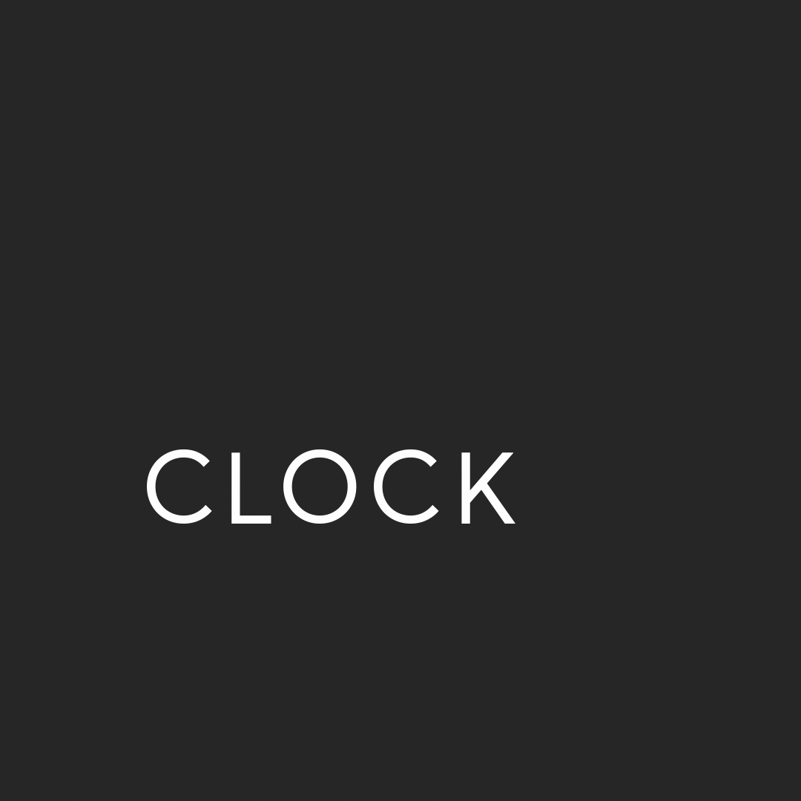
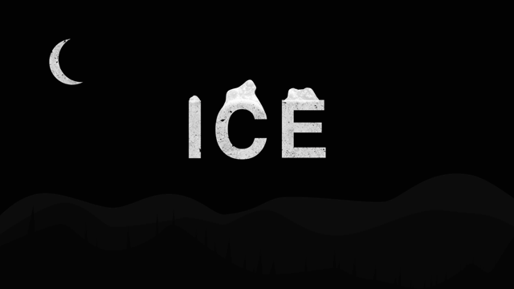
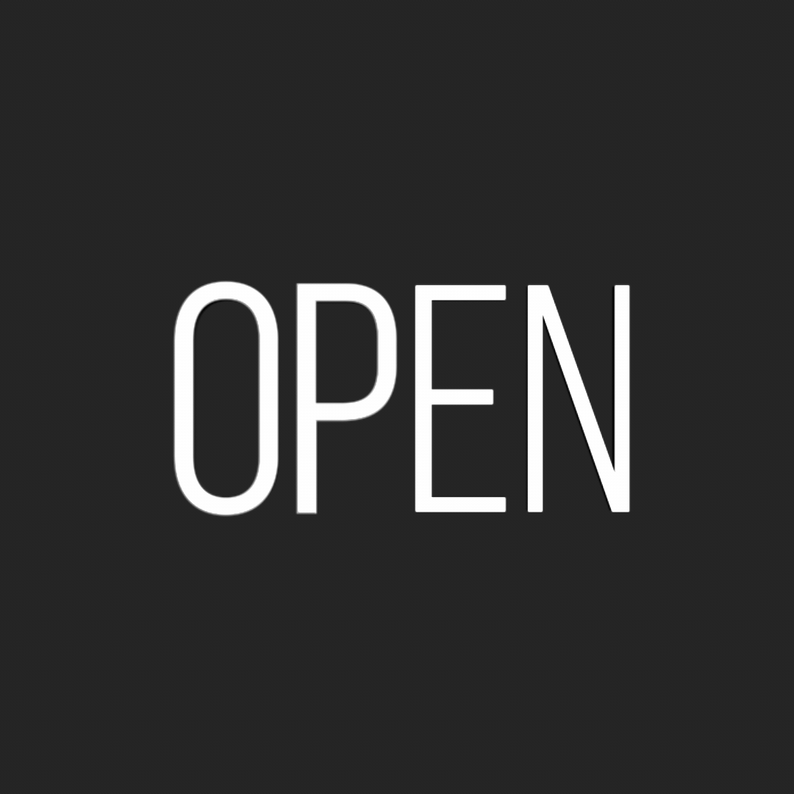
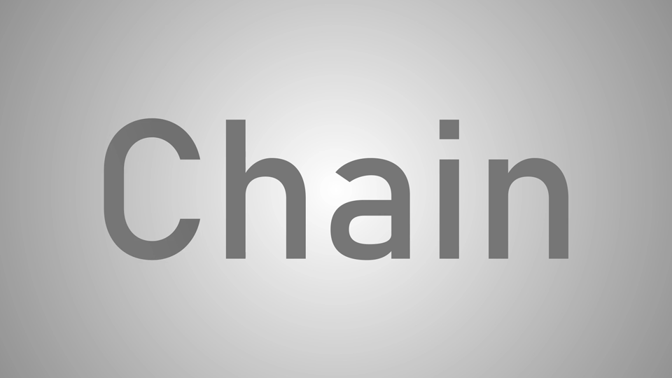

Домашнее задание
Два задания в After Effects: анимация подписи с именем и группой и типографическая анимация, которая передаёт смысл выбранного слова.
Задание 1. Lower Thirds
Создайте анимацию Lower Thirds со своим именем и номером группы. Lower Thirds представляет собой подпись в нижней части кадра, которая помогает представить человека. Ваша задача: организовать появление текста и графики так, чтобы имя и группа легко читались.
- Посмотрите примеры ниже. Выберите один вариант или придумайте свой похожий по задаче.
- Замените текст на своё имя и номер группы. Выстройте иерархию: имя должно быть главным, номер группы дополнительной информацией.
- Продумайте появление подписи, паузу для чтения и её исчезновение.
- Создайте анимацию в After Effects. Используйте текстовые слои, шейпы, маски и ключевые кадры по необходимости.
- Проверьте, что текст остаётся читаемым, элементы не перекрывают друг друга, а скорость движения позволяет заметить подпись.
Примеры служат ориентирами для собственного решения. Можно повторить принцип движения выбранного варианта или разработать свою композицию и анимацию.
Задание 2. Анимация смысла слова
Выберите слово, наберите его типографикой и создайте анимацию, близкую по значению этому слову. Движение букв, их форма, ритм и взаимодействие должны помогать зрителю почувствовать смысл.
Например, в слове «вода» буквы могут двигаться волнами, а слово «свет» может постепенно загораться или включаться. Для слова «пружина» можно использовать сжатие и растяжение. Выберите своё слово и найдите подходящее ему движение.
- Запишите, какое свойство или действие связано со словом: течение, свечение, вращение, открывание, соединение или другое.
- Подберите шрифт, размер, расположение и цвет текста. Типографика должна поддерживать выбранную идею.
- Сделайте простой эскиз движения и проверьте, выражает ли он значение слова.
- Создайте анимацию в After Effects. Можно двигать отдельные буквы, изменять контуры, использовать маски, шейпы и выражения.
- Проверьте, что слово можно прочитать хотя бы в один момент анимации, а движение связано с его смыслом.
Обратите внимание на примеры ниже: буквы могут вращаться, открываться, соединяться или менять состояние. Попробуйте передать значение через сам текст, а дополнительные элементы использовать как поддержку идеи.




Перед завершением
- В первом задании указаны ваши имя и номер группы, подпись читается и имеет понятные появление и исчезновение.
- Во втором задании движение передаёт значение слова, а типографика поддерживает выбранную идею.
- В обоих проектах слои названы понятно, а исходные материалы доступны.